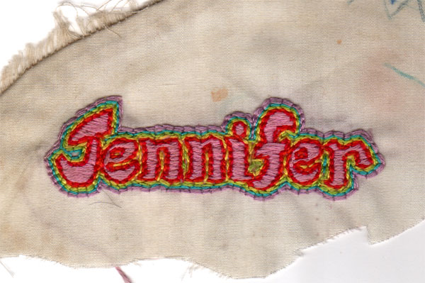

Embroidery (Age 12) | JENNIFER

I remember embroidering my name a lot. I designed this swashy, serifed font myself, then painstakingly traced it in the colors of the rainbow. I actually sold name "patches" to kids at school for 50 cents (I think I sold two).
1 of 5
previous | next